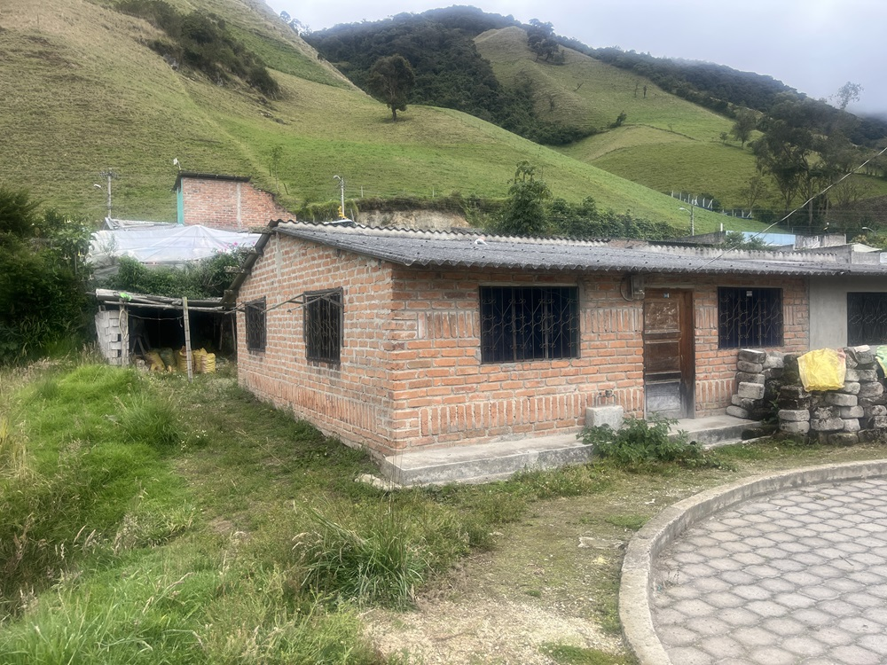
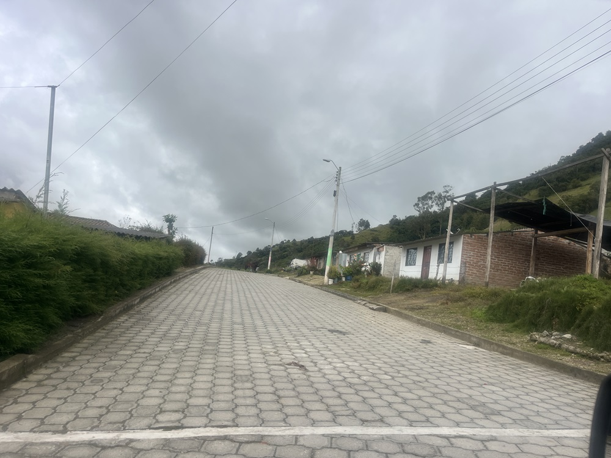
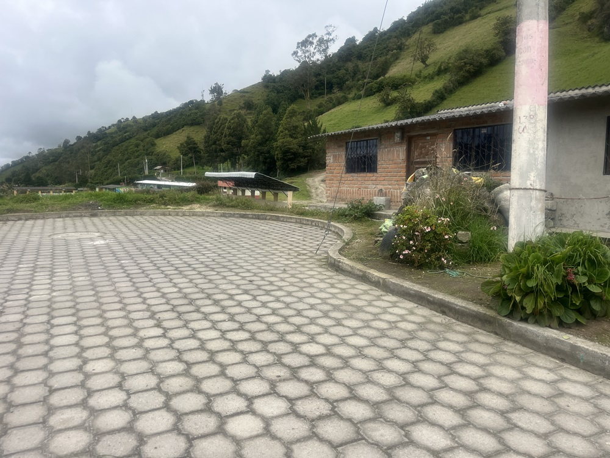
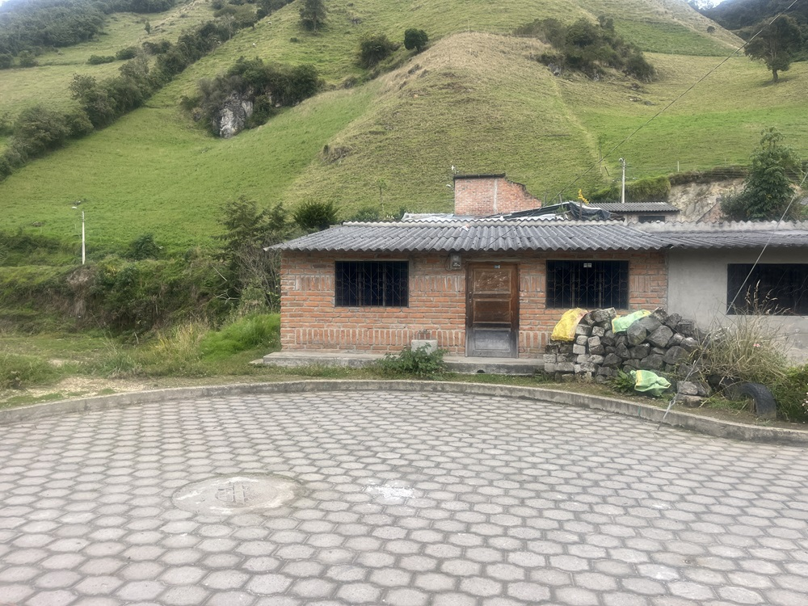
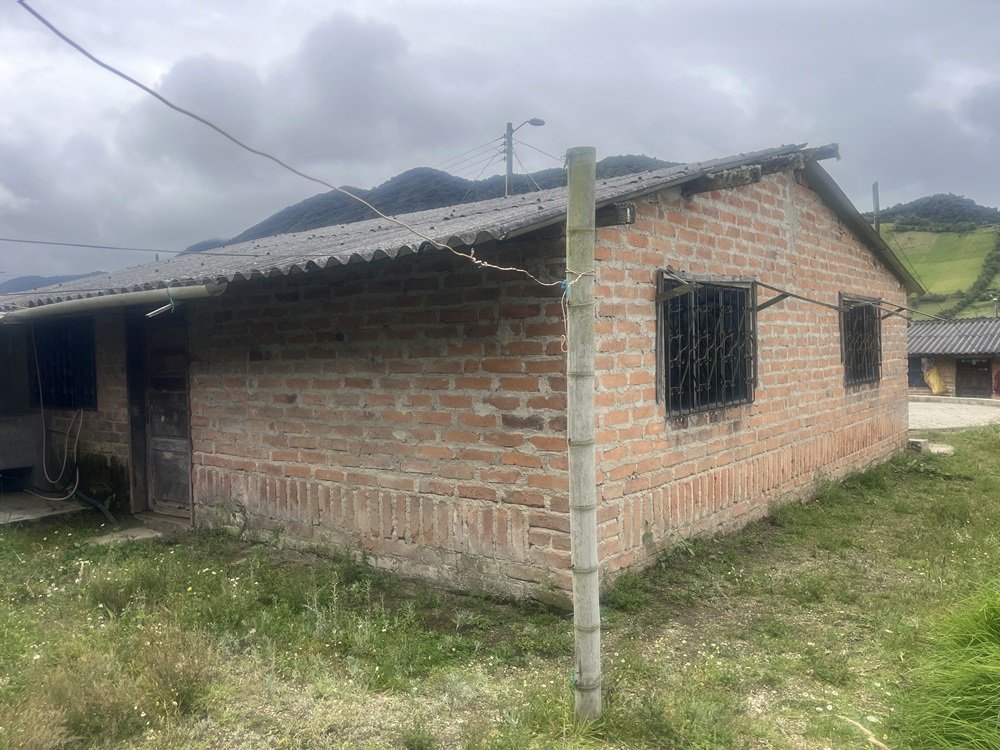
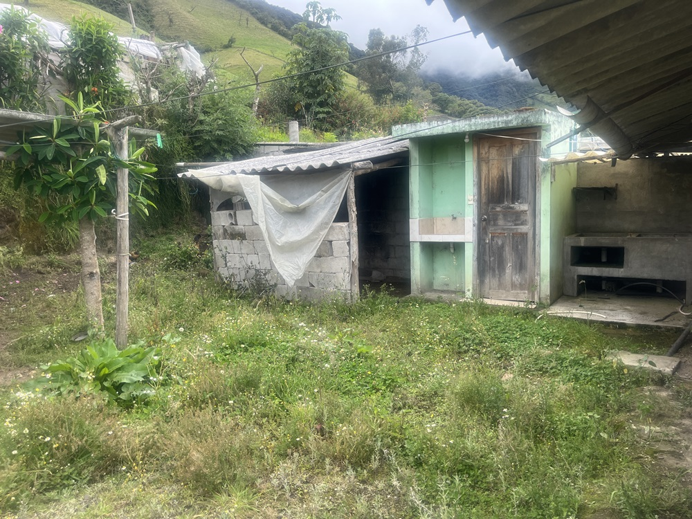
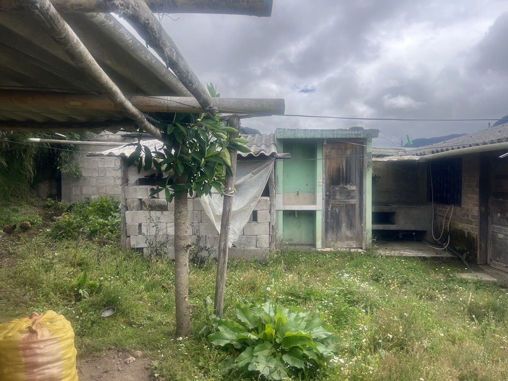
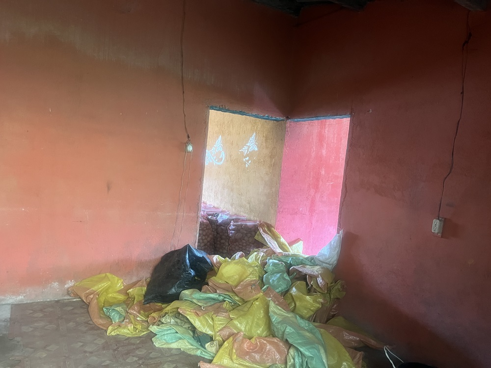
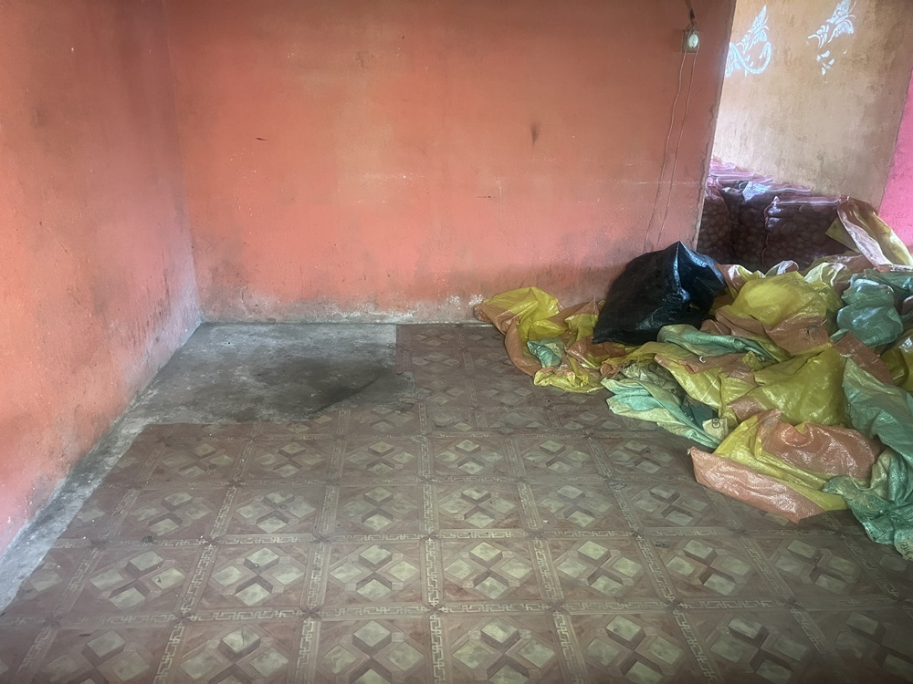
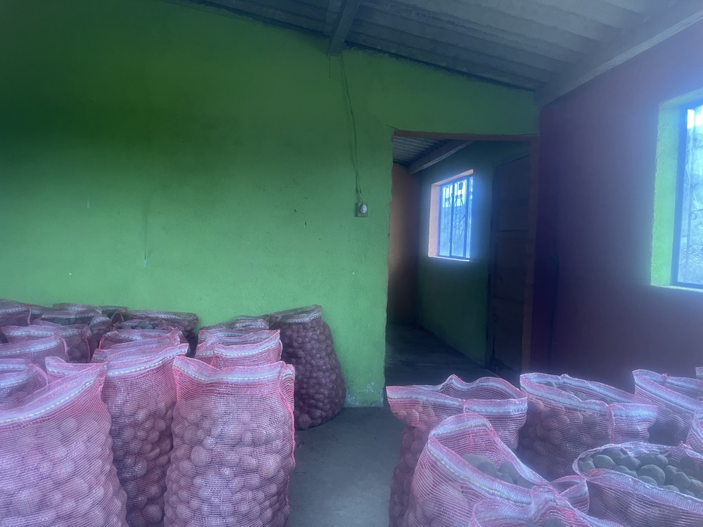

← volver al mapa
Casa - EC-RJ-156033
EC-RJ-156033 · casa · TULCAN, Carchi










Datos del remate
| Avalúo pericial | $17,307 |
| Tipo de bien | casa |
| Área de construcción | 59.05 m² |
| Área de terreno | 241.29 m² |
| Cantón / Provincia | TULCAN, Carchi |
| Dirección / Sector | EL CARMELO. provincia: carchi cantón: tulcan parroquia: el carmelo poblacion: el carmelo urbanizacion: la victoria calle: uno |
| Señalamiento | Primer Señalamiento |
| Fecha de remate | 2026-09-21 |
| No. de proceso | 04333202500027 |
Análisis vs. mercado
Descartado del análisis automático: comparables insuficientes (3/5).
Descripción completa del avalúo
propiedad que se encuentra en la población de el carmelo, que es parte de una urbanización denominada la victoria, cuyo acceso se lo realiza a través de la antigua carretera a tulcán, ubicada junto al estadio, a 250 metros de la unidad educativa el carmelo y a una de distancia de un kilómetro del parque central de el carmelo. se trata de una propiedad consistente en terreno con una construcción sin acabados, destinada a bodega. en el sector existen los servicios básicos de infraestructura como son energía eléctrica, agua potable y alcantarillado. el camino de acceso es adoquinado, tiene bordillos sin veredas
caracteristicas particulares del terreno - de forma irregular, teniendo todos sus lados de diferente dimensión. - terreno completamente plano. - área de terreno de 241.29 m2. - la edificación se encuentra en la parte frontal del terreno. . - terreno que no tiene cerramientos, solo mojones que determinan sus linderos. - propiedad ubicada en una zona urbana de baja plusvalía. 3.5 - caracteristicas de la construccion corresponde esta construcción a la edificación que se encuentra al frente del terreno, donde se han planificado 4 cuartos destinaos a vivienda, pero que en el momento de la inspección se observó que no vivía nadie, solo ocupada para bodega de papas. en la parte posterior se ha generado un patio donde existe un pequeño tendido destinado también a bodega de papas y un baño. construcción que tiene una superficie de 59.05 m2., y tiene las siguientes características: - construcción cuyo elemento estructural es de paredes soportantes de ladrillo, es decir no posee columnas de ningún tipo. - los pisos son pavimentados, sin ningún recubrimiento. - las paredes son de ladrillo enlucidas en la parte interior y sin enlucir en el exterior. - los cuartos destinados a vivienda pero que se encuentran ocupados para bodega de papas. - la puerta de entrada y la posterior son de madera, no existiendo puertas en el interior. - ventanas de hierro con protecciones y vidrio - la cubierta es de eternit en estructura de madera, sin cielo raso. - se observo los medidores de agua potable y energía eléctrica. - toda la construcción se encuentra en mal estado de conservacion.
provincia: carchi cantón: tulcan parroquia: el carmelo poblacion: el carmelo urbanizacion: la victoria calle: uno
Límites: norte: en 12.75 m., con calle uno. sur: en 11.38 m., con el lote # 1. este: en 20.05 m., con estadio el carmelo. oeste: en 20.00 m., con el lote # 15.
Clave catastral: 040154010404010000.
Periodo de posturas: 21/09/2026 00:00:00 a 21/09/2026 23:59:59
Dependencia jurisdiccional: UNIDAD JUDICIAL CIVIL CON SEDE EN EL CANTÓN TULCÁN, PROVINCIA DE CARCHI
Análisis de inversión
⚠ Dudosa — revisar bienBodega sin acabados, cerca de un estadio y una unidad educativa; sin área registrada.
A favor:
En contra:
Análisis elaborado a partir de la descripción del avalúo — no es asesoría legal ni financiera.
Esta ficha es una copia de lo publicado en el sitio oficial de remates
judiciales de la Función Judicial del Ecuador, para consulta — no
reemplaza el expediente judicial. remates.funcionjudicial.gob.ec no da
un link propio por remate, por eso se generó esta página aparte.
Antes de ofertar, el expediente debe revisarlo un abogado.